Plot single-molecule footprinting data for a single genomic region
Source:R/plotRegion.R
plotRegion.RdThe plotRegion function visualizes read-level or collapsed
single-molecule footprinting data, such as data imported using
readModkitExtract, readModBam or
readBedMethyl. The plotReadsLollipop,
plotReadsHeatmap, plotSummaryPointSmooth and
plotGenomicRegions functions are helper functions for creating
single plot tracks. These are invoked by plotRegion,
and typically do not need to be directly called by the user.
Usage
plotRegion(
se,
region = NULL,
tracks = list(list(trackData = "FracMod", trackType = "Point")),
modbaseSpace = FALSE,
sequenceContext = NULL,
referenceCoordinate = NULL,
labelAccuracy = NULL,
suppressTickLabels = FALSE
)
plotBigWig(
bwFiles,
region,
trackTitle = NULL,
legendTitle = NULL,
yAxisLabel = "Score",
showLegend = TRUE,
highlightRegions = NULL,
colors = NULL,
referenceCoordinate = NULL,
labelAccuracy = NULL,
yAxisRange = NULL
)
plotReadsLollipop(
se,
region,
assayName,
size = 3,
stroke = 0.5,
drawRead = TRUE,
orderReads = "cluster",
modbaseSpace = FALSE,
trackTitle = NULL,
legendTitle = NULL,
yAxisLabel = "Reads",
showLegend = TRUE,
highlightRegions = NULL,
footprintColumns = NULL,
arglistFootprints = list(),
facetBy = "sample",
adjustFacetHeight = TRUE,
referenceCoordinate = NULL,
labelAccuracy = NULL
)
plotReadsHeatmap(
se,
region,
assayName,
drawRead = TRUE,
linewidthTiles = 0,
orderReads = "cluster",
modbaseSpace = FALSE,
interpolate = FALSE,
trackTitle = NULL,
legendTitle = NULL,
yAxisLabel = "Reads",
showLegend = TRUE,
highlightRegions = NULL,
footprintColumns = NULL,
arglistFootprints = list(),
facetBy = "sample",
adjustFacetHeight = TRUE,
referenceCoordinate = NULL,
labelAccuracy = NULL
)
plotSummaryPointSmooth(
se,
region,
assayName,
doPoint = TRUE,
arglistPoint = list(),
doSmooth = TRUE,
arglistSmooth = list(),
smoothMethod = "rollingMean",
spar = 0.01,
windowSize = 15,
modbaseSpace = FALSE,
trackTitle = NULL,
legendTitle = NULL,
yAxisLabel = assayName,
showLegend = TRUE,
highlightRegions = NULL,
groupBy = "sample",
colorBy = "sample",
colors = NULL,
referenceCoordinate = NULL,
labelAccuracy = NULL,
yAxisRange = NULL
)
plotGenomicRegions(
grl,
region,
colorByStrand = TRUE,
displayNames = TRUE,
labelSize = 3,
labelPosition = "above",
trackTitle = NULL,
legendTitle = NULL,
showLegend = TRUE,
referenceCoordinate = NULL,
labelAccuracy = NULL
)Arguments
- se
A
SummarizedExperimentobject with read-level or collapsed single-molecule footprinting data (positions in rows and samples in columns).- region
A
GRangesobject with a single region. Only data fromseoverlapping this region will be plotted. Alternatively, the region can be specified as a character scalar (e.g. "chr1:1200-1300") that can be coerced into aGRangesobject. IfNULL(the default), all the data on the first sequence insewill be visualized.- tracks
A list of named lists, representing the tracks to generate. Each element of the outer list defines one track, and has to contain at least list entries named 'trackData' (the name of a suitable assay in
se, for data tracks, or aGRangesListobject for the annotation tracks) and 'trackType' (the type of plot), plus any additional arguments to the respective plot function. Currently supported plot types are"Point": A point plot displaying values in the assay.
"Smooth": A smoothed line plot displaying values in the assay.
"PointSmooth": A point and smoothed line plot displaying values in the assay.
"Lollipop": Lollipop plot (filled circles with the color representing the values in the assay).
"Heatmap": Heatmap plot (tiles with the color representing the values in the assay).
"GenomicRegion"or"GenomicRegions": Genomic annotations (e.g., transcripts, peaks, CpG islands).
- modbaseSpace
A logical scalar. If
TRUE, the x-axis will be shown in the space of modified bases and contain only the positions at which there are modified bases in the data without any gaps between them. IfFALSE, the x-axis will show the genomic coordinate on which the modified bases are typically irregularly spaced.- sequenceContext
A character vector with sequence context(s) to plot. Only positions that match one of the provided sequence contexts will be included in the plot. Sequence contexts can be provided using IUPAC redundancy codes. The sequence contexts of modified bases are obtained from
rowData(se)$sequenceContextand thus requires thatsecontains the appropriate information, for example by setting thesequenceContextWidthandsequenceReferencearguments ofreadBedMethyl,readModBamorreadModkitExtractwhen reading data, or by adding it usingaddSeqContext.- referenceCoordinate
A numeric scalar providing the coordinate position (on the reference sequence in
region) used as an "anchor" to display relative positions. IfNULL(the default), absolute genomic positions are used. Ignored ifmodbaseSpaceisTRUE.- labelAccuracy
A numeric scalar indicating the precision of the positions along the genomic axis. Will be passed to
label_number. IfNULL(default), a suitable value will be derived fromregion.- suppressTickLabels
Logical scalar. If
TRUE, suppress x-axis tick labels for all but the last panel.- bwFiles
A named character vector with paths to one or more bigWig files to plot.
- trackTitle
A character scalar or
NULL, giving the title of the track.- legendTitle
A character scalar or
NULL. If notNULL, this will be the title of the track fill/color legend. IfNULL, the name of the assay (assayName, for heatmaps and lollipop plots)"Sample"(for summary plots), or"strand"(for genomic region plots) will be used.- yAxisLabel
A character scalar providing the label to use for the y-axis.
- showLegend
A logical scalar, indicating whether or not to display the legend for the track.
- highlightRegions
A
GRangesobject containing regions to highlight with a grey shading.- colors
A named character vector of colors to use for the unique values in the
colorByannotation column. IfNULL(default), the defaultggplot2colors will be used.- yAxisRange
Numeric vector of length 2 giving the range to zoom in to on the y-axis. If
NULL(default), will be determined from the data.- assayName
A character or numerical scalar selecting the assay to plot. This should be an existing read-level or summary assay, as appropriate for the plot type. A special case is the track name
"FracMod": Ifsedoes not contain a summary assay of that name, but"Nmod"and"Nvalid"assays are available,"FracMod"will be calculated fromassay(se, "Nmod") / assay(se, "Nvalid").- size
A numeric scalar giving the size of the points (
sizeargument ofgeom_point).- stroke
A numeric scalar giving the stroke (line width) of the point outlines (
strokeargument ofgeom_point).- drawRead
A logical scalar. If
TRUE, draw a horizontal line segment for each read from its start to its end.- orderReads
A character scalar, or
NULL. If"cluster", the position of reads on the y-axis will be reordered usinghclust(as.dist(sqrt(2 - 2 * cor(X, method = "pearson", use = "pairwise.complete"))))$order, whereXisassay(x, assayName)with zero values set toNAand averaged over windows of 25 nucleotides. If set to"squish", the display will be compacted by placing multiple reads in the same row when possible. IfNULL, no reordering is done.- footprintColumns
A character vector with names of columns from
colData(se)containing footprints to display. Typically these columns are generated usingaddFootprints. IfNULL, no footprints are displayed.- arglistFootprints
A named list with arguments to be passed to
geom_tile, in addition to thedata,mapping, andinherit.aesarguments, which are set automatically.arglistFootprintscan be either a single list of such arguments (in which case the same arguments will be used for all plotted footprint columns), or a named list with one entry per value infootprintColumns.- facetBy
A character scalar indicating the sample annotation column to facet the plot by (if
NULL, no faceting is done). By default, the plot will be facetted by 'sample', corresponding to the columns ofse.- adjustFacetHeight
A logical scalar. If
TRUE, adjust the height of the facets by the number of reads in each of them. IfFALSE, all facets have the same height.- linewidthTiles
A numeric scalar, the line width of the border drawn around each measured base.
- interpolate
A logical scalar. If
TRUE, the gaps between observations are filled in by linear interpolation.- doPoint
A logical scalar. If
TRUE, show points in the plot.- arglistPoint
A list with arguments to be sent to
geom_point.- doSmooth
A logical scalar. If
TRUE, show a smooth line in the plot.- arglistSmooth
A list with arguments to be sent to
geom_line.- smoothMethod
A character scalar indicating the method to use for smoothing. Current options are
"smoothSpline"and"rollingMean"(default, linear interpolation of values to the single-base pair level (unlessmodbaseSpaceisTRUE), followed by rolling mean calculation).- spar
A numeric scalar typically in (0,1] specifying the desired degree of smoothing if
smoothMethodis"smoothSpline"(sparargument ofsmooth.spline).- windowSize
A numeric scalar specifying the window size for smoothing if
smoothMethodis"rollingMean".- groupBy
A character scalar indicating the sample annotation column to group the points by for creating smoothed lines. By default, the points will be grouped by 'sample', corresponding to the columns of
se. Typically, thegroupBycolumn should provide a finer (or identical) partition compared to thecolorBycolumn - for example, grouping by sample and coloring by condition.- colorBy
A character scalar indicating the sample annotation column to color the points and smoothed lines by. By default, the points and lines will be colored by 'sample', corresponding to the columns of
se.- grl
A named
GRangesListobject where each entry corresponds to a transcript or genomic feature.- colorByStrand
A logical scalar indicating whether or not to color features by strand.
- displayNames
A logical scalar indicating whether or not to display the names of the features in the plot.
- labelSize
A numeric scalar representing the font size of the displayed label (if
displayNamesisTRUE).- labelPosition
A character scalar, either
"above","below"or"inside", indicating whether to place the feature labels above, below or inside the respective feature.
Value
A ggplot object with tracks selected by
tracks.
See also
readModBam, readModkitExtract and
readBedMethyl for reading read-level and summarized
footprinting data.
Examples
# summarized data (5mC)
bmfiles <- system.file("extdata",
c("modkit_pileup_1.bed.gz", "modkit_pileup_2.bed.gz"),
package = "footprintR")
reffile <- system.file("extdata", "reference.fa.gz", package = "footprintR")
seA <- readBedMethyl(bmfiles, modbase = "m",
sequenceContextWidth = 3, sequenceReference = reffile,
BPPARAM = BiocParallel::SerialParam())
plotRegion(seA, region = "chr1:6940000-6955000", sequenceContext = "GCH")
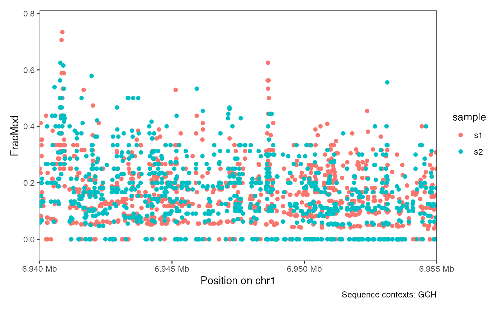
plotRegion(seA, region = "chr1:6940000-6955000", sequenceContext = "HCG")
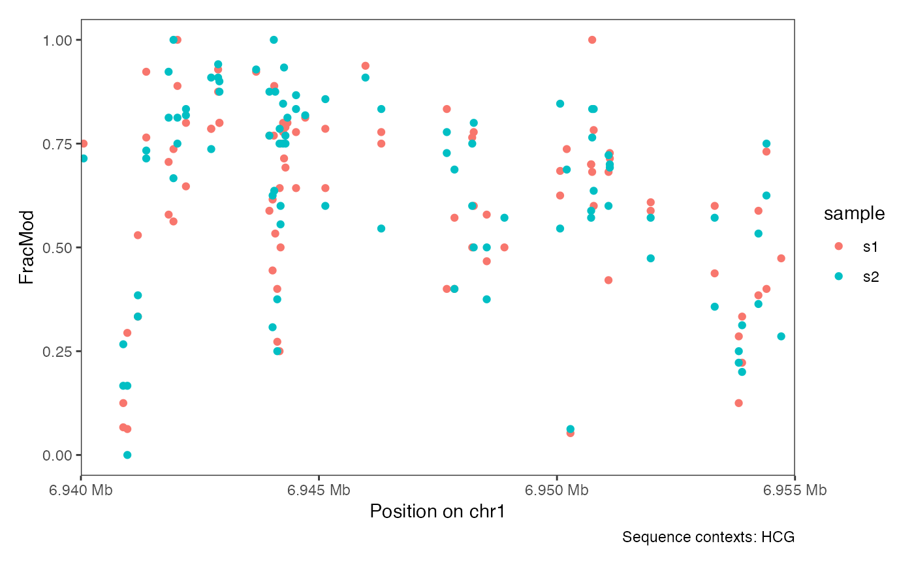
plotRegion(seA, region = "chr1:6940000-6955000",
tracks = list(list(trackData = "Nvalid", trackType = "Smooth")))
# read-level data (6mA)
extractfiles <- system.file("extdata",
c("modkit_extract_rc_6mA_1.tsv.gz",
"modkit_extract_rc_6mA_2.tsv.gz"),
package = "footprintR")
seB <- readModkitExtract(extractfiles, modbase = "a", filter = "modkit",
BPPARAM = BiocParallel::SerialParam())
# Lollipop plot
plotRegion(seB, region = "chr1:6935800-6935900",
tracks = list(list(trackData = "mod_prob", trackType = "Lollipop")))
#> Warning: the standard deviation is zero
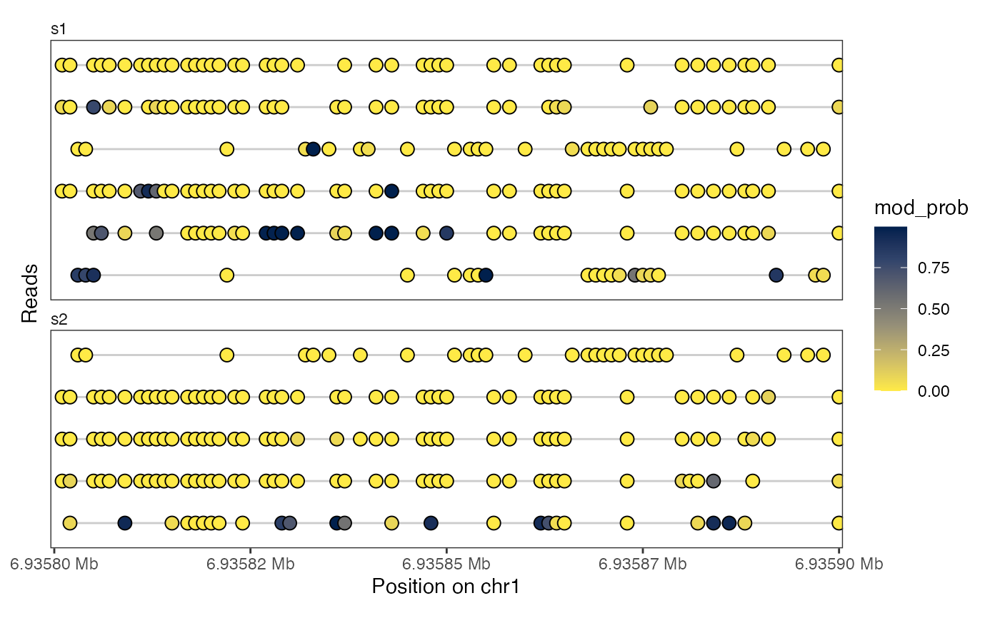
# Heatmap plots (observed only or interpolated)
plotRegion(seB, region = "chr1:6935800-6935900",
tracks = list(list(trackData = "mod_prob", trackType = "Heatmap")))
#> Warning: the standard deviation is zero
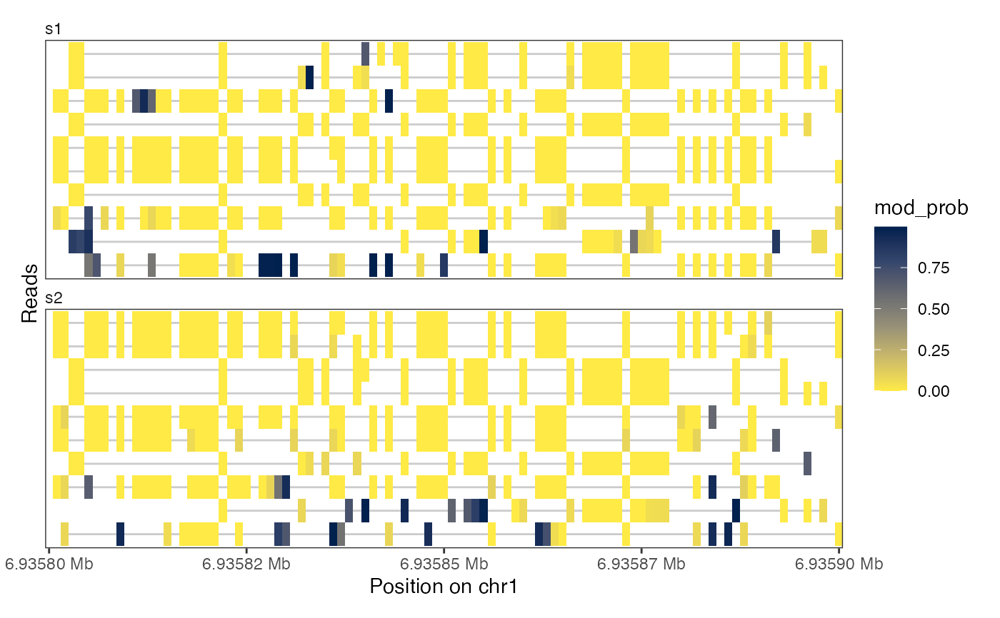
plotRegion(seB, region = "chr1:6935800-6935900",
tracks = list(list(trackData = "mod_prob", trackType = "Heatmap",
interpolate = TRUE)))
#> Warning: the standard deviation is zero
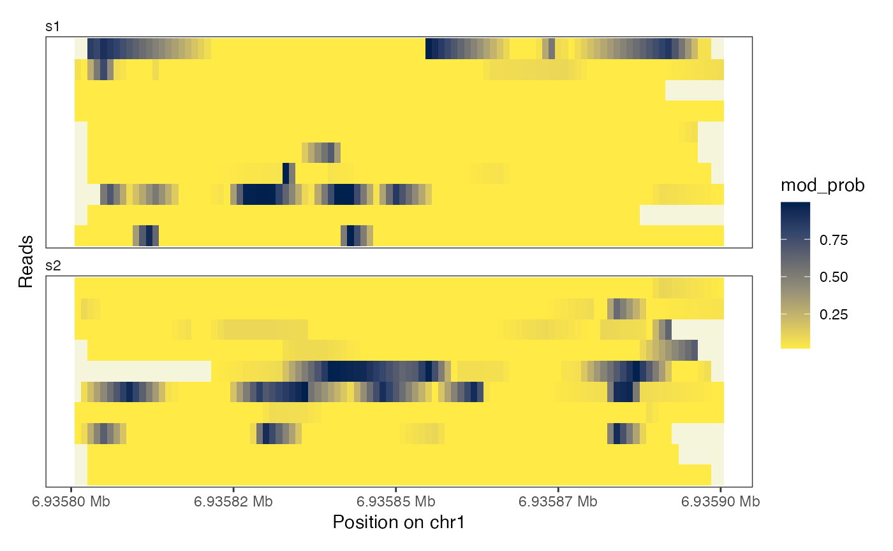
# multiple plots, in 'modbase' space
plotRegion(seB, region = "chr1:6935400-6935450",
tracks = list(list(trackData = "mod_prob", trackType = "Lollipop",
size = 4),
list(trackData = "mod_prob", trackType = "Heatmap")),
modbaseSpace = TRUE)
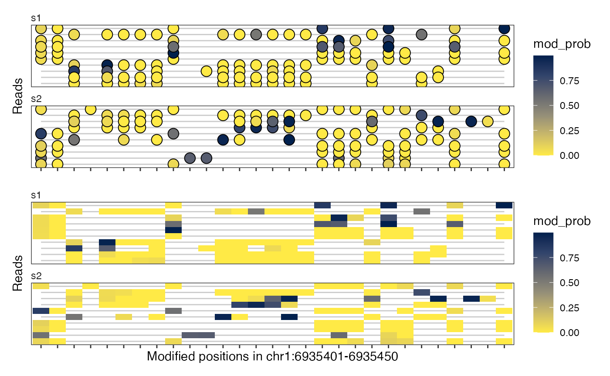
# combine read-level and summary tracks,
# set relative heights of tracks, don't facet by sample,
# change titles of legends
seB <- flattenReadLevelAssay(seB, assayName = "mod_prob")
plotRegion(seB, region = "chr1:6935400-6935450",
tracks = list(list(trackData = "mod_prob", trackType = "Lollipop",
size = 4, legendTitle = "6mA",
facetBy = NULL),
list(trackData = "FracMod", trackType = "Smooth")),
modbaseSpace = TRUE) +
patchwork::plot_layout(heights = c(3, 2))
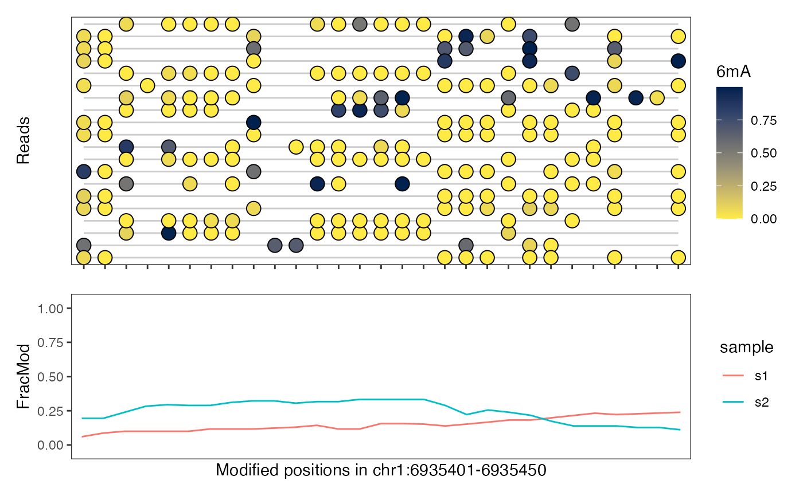
library(GenomicRanges)
extractfiles <- system.file("extdata",
c("modkit_extract_rc_6mA_1.tsv.gz",
"modkit_extract_rc_6mA_2.tsv.gz"),
package = "footprintR")
seB <- readModkitExtract(extractfiles, modbase = "a", filter = "modkit",
BPPARAM = BiocParallel::SerialParam())
plotReadsLollipop(seB, region = as("chr1:6935400-6935450", "GRanges"),
assayName = "mod_prob",
highlightRegion = GRanges("chr1", IRanges(6935420, 6935430)))
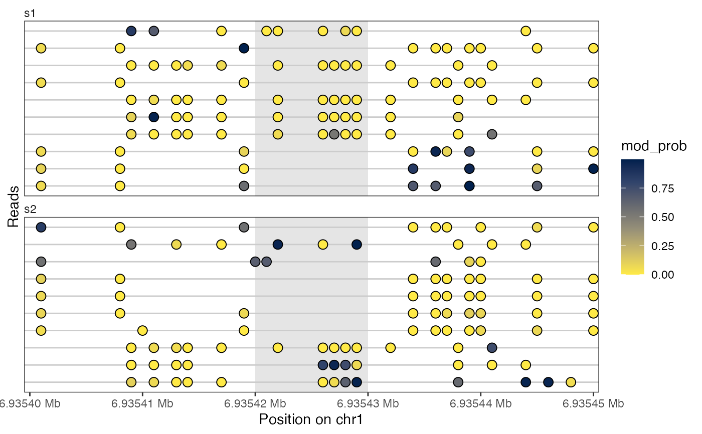
library(GenomicRanges)
extractfiles <- system.file("extdata",
c("modkit_extract_rc_6mA_1.tsv.gz",
"modkit_extract_rc_6mA_2.tsv.gz"),
package = "footprintR")
seB <- readModkitExtract(extractfiles, modbase = "a", filter = "modkit",
BPPARAM = BiocParallel::SerialParam())
plotReadsHeatmap(seB, region = as("chr1:6935400-6935450", "GRanges"),
assayName = "mod_prob",
highlightRegion = GRanges("chr1", IRanges(6935420, 6935430)))
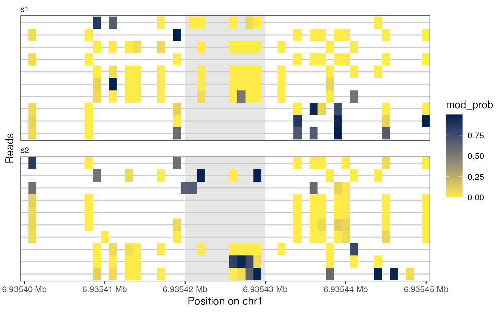
library(GenomicRanges)
bmfiles <- system.file("extdata",
c("modkit_pileup_1.bed.gz", "modkit_pileup_2.bed.gz"),
package = "footprintR")
reffile <- system.file("extdata", "reference.fa.gz", package = "footprintR")
seA <- readBedMethyl(bmfiles, modbase = "m",
sequenceContextWidth = 3, sequenceReference = reffile,
BPPARAM = BiocParallel::SerialParam())
plotSummaryPointSmooth(seA, region = as("chr1:6940000-6955000", "GRanges"),
assayName = "Nvalid", doPoint = FALSE)
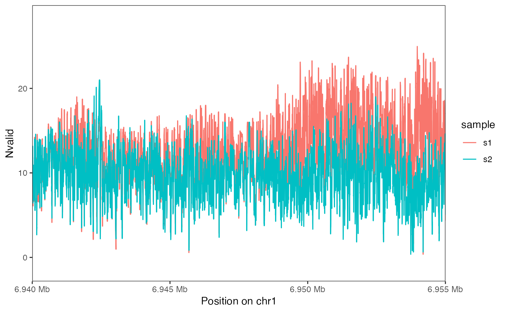
library(GenomicRanges)
plotGenomicRegions(grl = GRangesList(
g1 = GRanges("chr1", IRanges(c(10, 30), c(20, 35)), "+"),
cgi1 = GRanges("chr1", IRanges(15, 25), "*"),
g2 = GRanges("chr1", IRanges(c(15, 25), c(20, 40)), "-")),
region = as("chr1:1-50", "GRanges"),
labelPosition = "inside",
labelSize = 5)
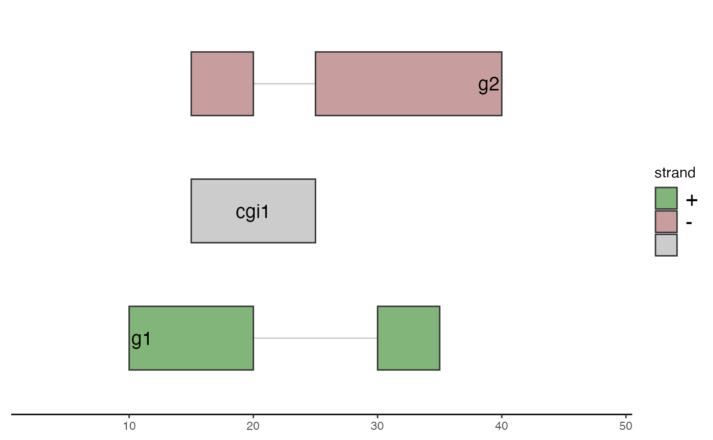